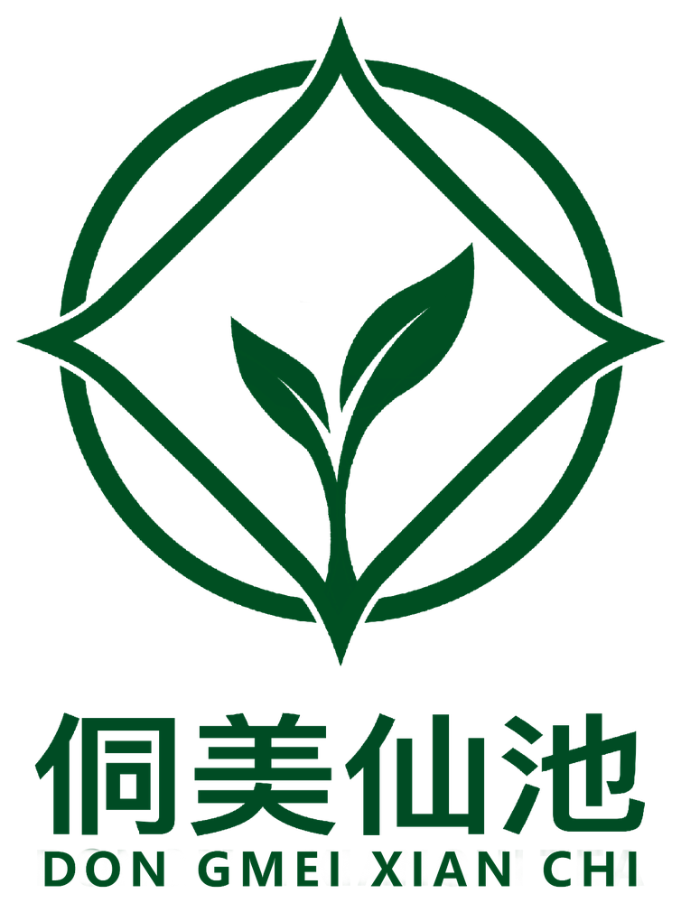
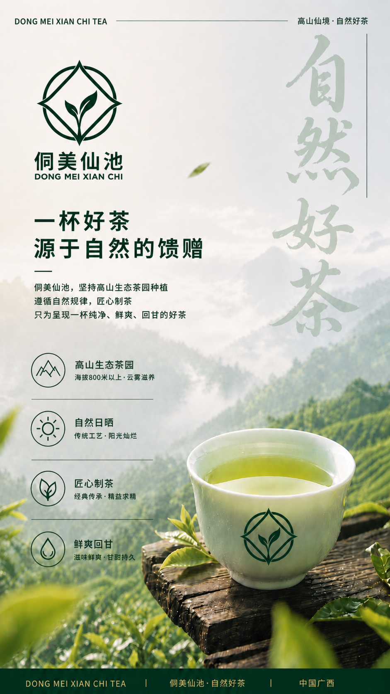
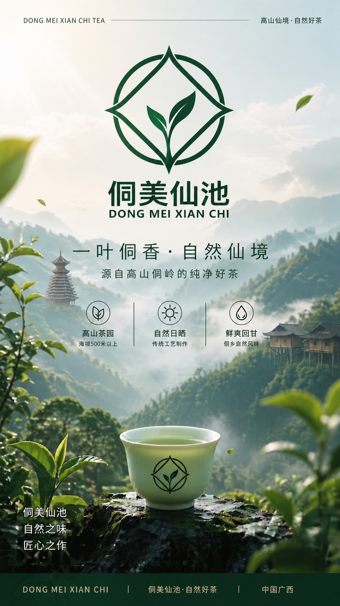
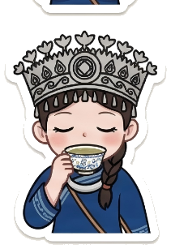
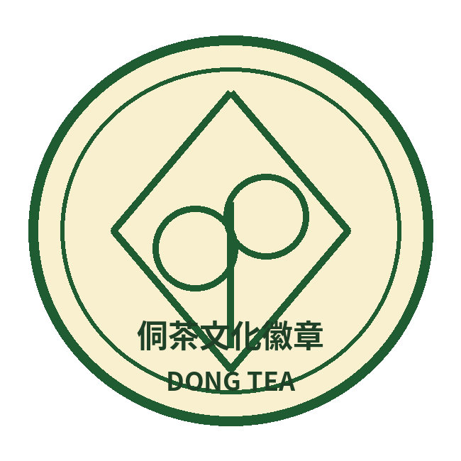

自然鲜韵
高山云雾、早春抢鲜、生态茶园，形成清润鲜爽的第一口记忆。

侗美仙池 DONGMEI XIANCHI TEA三江早春茶 · 侗族非遗 · 助农茶礼
来自三江云雾茶山的早春鲜叶，遇见侗族纹样、鼓楼意象与手艺人的温度。扫码进入侗茶小绣导览，听一杯茶背后的产地、非遗与助农故事。

Brand Story
侗美仙池把“三江早春茶”的鲜爽，与侗族非遗的美学转化为一套可感知的品牌体验。消费者不需要看复杂说明，只要扫码，就能顺着小绣的讲述看见茶山、手艺和助农去向。
高山云雾、早春抢鲜、生态茶园，形成清润鲜爽的第一口记忆。
将侗族服饰纹样、织锦色彩、鼓楼意象转化为包装、IP 与互动视觉。
通过产品销售、茶农故事、传承人内容与公益反馈，让购买更有意义。
Scan Experience
把手机对准侗美仙池海报、茶盒或展架识别图，即可进入数字导览。现在点击下方按钮，模拟一次真实扫码体验。
它是品牌的数字入口：扫一下，就能听产地故事、看非遗纹样、了解助农去向，还能领取专属体验徽章。
Xiaoxiu Guide
我会带你看见一杯茶的来处：它来自三江茶山，也来自侗族手艺人的纹样与茶农的辛勤。

Tea Series
从日常自饮、节日送礼到三江旅行纪念，侗美仙池把自然好茶做成更容易选择、也更愿意分享的茶礼体验。

日常饮用
清润鲜爽，适合办公室、家庭日常冲泡。轻包装、好入口、适合复购。

礼品赠送
融入侗族纹样与鼓楼意象，适合节日送礼、企业伴手礼与文化茶礼。
文旅纪念
结合 IP、打卡、问答与徽章，适合景区、展馆、茶博会的年轻游客体验。
Good Tea, Good Cause
侗美仙池希望让消费者清楚看见：一杯茶不只有味道，也有产地、手艺和人的故事。未来包装可接入茶农信息、非遗元素解析、助农金额说明与溯源页面，让“消费即助力”真正可感知。